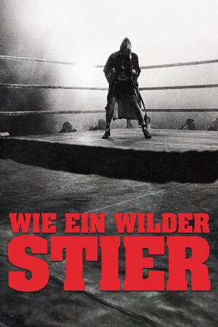

#5776 Wie ein wilder Stier
Alternativ: Raging Bull
Auszeichnungen: 2 Oscars gewonnen für 6 Oscars nominiert 1 GoldenGlobes gewonnen 2 BAFTA-Awards gewonnen
 
 IMDB-Wertung: 8.2 / 10
IMDB-Wertung: 8.2 / 10  IMDB-TOP-Platzierung: 128
IMDB-TOP-Platzierung: 128  Metascore: 0
Metascore: 0 
Ende der 40er Jahre schlägt sich der New Yorker Berufsboxer Jake LaMotta, wegen seiner ungezügelten Energie von Freund wie Feind "Raging Bull" genannt, zum Schwergewichtschampion und Liebling des nach einem weißen Helden gierenden Publikums hoch. Unschöne Machenschaften seines mafiösen Bekanntenkreises und die eigene charakterliche Labilität sorgen dafür, daß der Höhenflug nicht allzu lange andauert, und so schlägt Jake nach seinem letzten Auftritt im Boxring eine Karriere als mäßig erfolgreicher Nachtclub-Komiker ein.
Jahr: 1980
Dauer: 129 Minuten
FSK: 16
Land: USA Studio: United ArtistsTonspuren: DTS - ,
Untertitel: Deutsch,
Auflösung: 1080p (1920x1040) Größe: 11776 MB
Genre: Drama, Sport, Biographie
Regisseur:  Martin Scorsese
Martin Scorsese
Drehbuch: Niven Busch
Soundtrack:
Darsteller:
 Robert De Niro als Jake La Motta
Robert De Niro als Jake La Motta Cathy Moriarty als Vickie La Motta
Cathy Moriarty als Vickie La Motta Joe Pesci als Joey
Joe Pesci als Joey Frank Vincent als Salvy
Frank Vincent als Salvy- Nicholas Colasanto als Tommy Como
- Theresa Saldana als Lenore
- Mario Gallo als Mario
 Charles Scorsese als Charlie - Man with Como
Charles Scorsese als Charlie - Man with Como- Bernie Allen als Comedian
 Shay Duffin als Ring Announcer - Janiro Fight
Shay Duffin als Ring Announcer - Janiro Fight- Jack Lotz als Referee - Fox Fight
- Kevin Breslin als Heckler - Fox Fight
 Michael Badalucco als Soda Fountain Clerk
Michael Badalucco als Soda Fountain Clerk- Geraldine Smith als Janet
- Peter Savage als Jackie Curtie
- Mary Albee als Underage I.D. Girl
- Candy Moore als Linda
 Martin Scorsese als Barbizon Stagehand
Martin Scorsese als Barbizon Stagehand- Vincent Di Paolo als Police officer , uncredited
- R. Michael Givens als Photographer , uncredited
- Charles Guardino als New Yorker , uncredited
 Chuck Hicks als Cornerman , uncredited
Chuck Hicks als Cornerman , uncredited- Dennis O'Neill als Dancer , uncredited
 John Turturro als Man at Webster Hall Table , uncredited
John Turturro als Man at Webster Hall Table , uncredited- McKenzie Westmore als Jake's Daughter , uncredited
- Jimmy Williams als Reporter , uncredited
 Frank Adonis als Patsy
Frank Adonis als Patsy- Joseph Bono als Guido
- Frank Topham als Toppy
- Lori Anne Flax als Irma
- Don Dunphy als Himself - Radio Announcer for Dauthuille Fight
- Bill Hanrahan als Eddie Eagan
- Rita Bennett als Emma - Miss 48's
- James V. Christy als Dr. Pinto
- Floyd Anderson als Jimmy Reeves - Reeves Fight
- Gene LeBell als Ring Announcer - Reeves Fight
- Harold Valan als Referee - Reeves Fight
- Victor Magnotta als Fighting Soldier - Reeves Fight
- Johnny Barnes als Sugar Ray Robinson - First Robinson Fight
- John Thomas als Trainer - First Robinson Fight
- Kenny Davis als Referee - First Robinson Fight
- Paul Carmello als Ring Announcer - First Robinson Fight
- Jimmy Lennon Sr. als Ring Announcer - Second Robinson Fight and Dauthuille Fight
- Bobby Rings als Referee - Second Robinson Fight
- Kevin Mahon als Tony Janiro - Janiro Fight
- Marty Denkin als Referee - Janiro Fight
- Eddie Mustafa Muhammad als Billy Fox - Fox Fight
- Dick Whittington als Ring Announcer - Fox Fight
- Louis Raftis als Marcel Cerdan - Cerdan Fight
- Frank Shain als Ring Announcer - Cerdan Fight
Datei: X:\1980\Wie ein wilder Stier (1980, FSK16, 1920x1040).mkv seit 20.03.2017
Festplatte: HD 1980-1986
 Es gibt insgesamt 33 Filme in der Gruppe '1980'
Es gibt insgesamt 33 Filme in der Gruppe '1980'